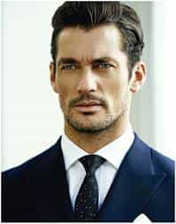
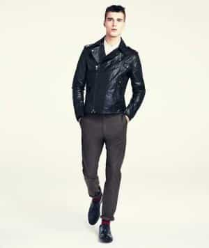
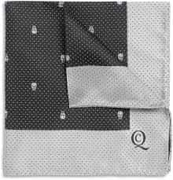

Troy is a game veteran of a decade's standing, and a lover of women, literature, travel and freedom. He is also the author of The Seven Laws of Seduction. Visit his website at Troy Francis.


One of the oldest questions in the seduction book is whether or not looks and appearance count when meeting women. To put an end to the years of debate around this issue let me answer it for you unequivocally now: yes, the way you look when you approach women matters. A lot. And the easiest way to look better is to dress well.
But because there are a myriad of different styles and tastes out there, game writers often find it difficult to provide cogent advice in this area. After all, what works for a guy into heavy metal living in the Midwest is unlikely to fly on the boulevards of Paris. In this article, though, I reveal two concepts you should keep in mind when you choose clothes, whatever your individual style or taste may be.

The way you look may be important, but you don’t need to be the equivalent of Ryan Gosling or British male model David Gandy. One of the reasons that game is so effective—whether you’re looking for a girlfriend or simply a little low-key female company—is that, fortunately for us, a man’s value extends considerably further than his aesthetics. Confidence, charm, ambition, and social and sexual dominance are all attributes that girls find exciting and attractive. If you can communicate these effectively in interactions with them, then you are likely to be rewarded for doing so. This, in a nutshell, is the essence of game.
However, what some men forget, or perhaps don’t fully grasp, is that “game,” as we speak of it today, is really a holistic discipline. Yes, the refinement of one’s social and interpersonal skills are crucial, but we should all also be striving to improve every aspect of ourselves, from our fitness, to our finances to—yes—our looks.
Of course, there’s not a great deal we can do about our facial features (short of plastic surgery) or height, but beyond that almost everything is a realistic candidate for improvement. And one thing’s for sure—an ugly dude who is well-groomed and stylish will do a hell of a lot better than one who isn’t.
Some might argue that an undue consideration for one’s appearance is kowtowing to women. I disagree. Looking good is predominantly about having respect for oneself. And just as the underlying point of game is the effective communication of value, this should also underpin the way you dress.
Think about yourself as a brand. Every element of the way you present yourself externally should have meaning, and that meaning should say something good about you. In this regard, your clothes are every bit as important as whatever clever line you dropped last night in the bar.

But you also need to be realistic. If you want to get with the most attractive girls then you need to look the part. A friend of mine who is just getting into game has steadfastly refused to alter his appearance—perhaps best described as “sporty-slacker-chic”—believing that charm and seductive qualities alone will see him through.
Unfortunately this is just not the case.
At the moment I am seeing a hot and classy English girl who is extremely well-presented and wears elegant clothes, some of them designer. I used all the normal game tactics I espouse here to get with her, but would the deal have been sealed were I not also well-dressed? I doubt it. She’s not a snob and she’s certainly not a gold digger, but she expects a guy who’s with her to “have his shit together.” Wearing ill-fitting, unfashionable clothes or looking like you’re just stepped out of a gym in the 1990s would not have worked.
Think about what the guy you imagine your ideal girl would most realistically be with. What is he wearing? If you don’t measure up, then go back to the drawing board (or the clothes store).
By the way, don’t blame women for this. Would you date a skank in a pair of loose dungarees with tattoos? Probably not. Think about clothes first and foremost as a mode of expression for your own personality, and take them seriously. That they will raise your SMV (sexual market value) in the process is a side-benefit, but a valuable one. Just like when you go to a company to make a sale, secure a job, or raise investment you might as well give yourself the best possible chance by looking presentable.
So, what should you consider when you are out selecting clothes to wear? Forget about the old-school PUA idea of peacocking. If that ever worked then you can bet it was because the guys using it had more going for them that a feather boa and a flashing belt, and it most likely made many more look like fools. In my view it is these two things you should keep in mind: power and mystique.
Remember, game is all about communicating value, and what better value is there to display than power?
Now, before people get the idea that this is all about wearing Armani suits and Tag watches, remember that power can mean a variety of things. Yes, there is the power that comes with wealth and influence, either political or commercial. But there is also the muscular power of the male body. Or the creative power of the rock musician, or the sporting power of the pro-athlete.
Have a look at what you’re wearing now and ask yourself honestly whether it makes you look powerful in any way. If you’re wearing a baggy old polo shirt, some chinos and a pair of old sneakers then the answer is probably no. I’m not suggesting you have to jettison these for a blazer and pocket square, as that may not be your thing, but what you must do is ensure that your clothes tell people that you are a together individual who possesses power of some kind.

This looks sharp and communicates power in terms of money, influence, and confidence
And this does not. Based on clothes alone who do you think will get the most tail?
A very simple was of doing this is to ensure that your clothes fit well. This is also dependent on local fashions, but I would suggest that in general tight and well-fitting trumps baggy. For one thing, a slim-cut pair of jeans will show off your physique much better than a baggy pair. This in itself will make you look more masculine and powerful. And a sharp-fitting suit jacket or a classic biker jacket will look a lot better than a hoodie (despite the billionaires of Silicon Valley).
The pocket square and the sunglasses are interesting details that add a little mystique to Craig’s look here
An ill-fitting and generic hoodie like this does not do the same for this guy
Which leads on to the second point – never be generic. You should instead always try to ensure that your clothes look just a little bit different, just a little bit unique, to communicate a little mystique. This is different to the old concept of peacocking in that you shouldn’t allow it to take over your whole outfit. Instead, you should just add little splashes of colour or detail—such as a designer pocket square, or cufflinks, or an unconventionally-cut coat—that mark you out as an individual rather than a neck-bearded loon.


Women love a man who is hard to pin down. If you’re an open book then you are not creating enough attraction. So try to bear this in mind when you are choosing clothes and incorporate little touches that make her wonder about you.
Above all, you must get into the habit of thinking seriously about your wardrobe and remember that everything that you wear is not only a reflection of your personality, but that this is also being communicated loud and clear to everyone around you. I’m not saying don’t do casual or dressed down, but I am saying make sure that it’s well-fitting and stylish.
Work on this area of your life to make yourself stand out—and why not give yourself the best chance of succeeding with women possible?
Read More: How to Be Seen By Women As An Alpha Male